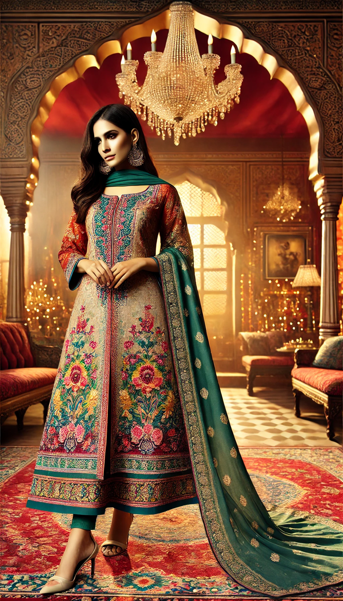
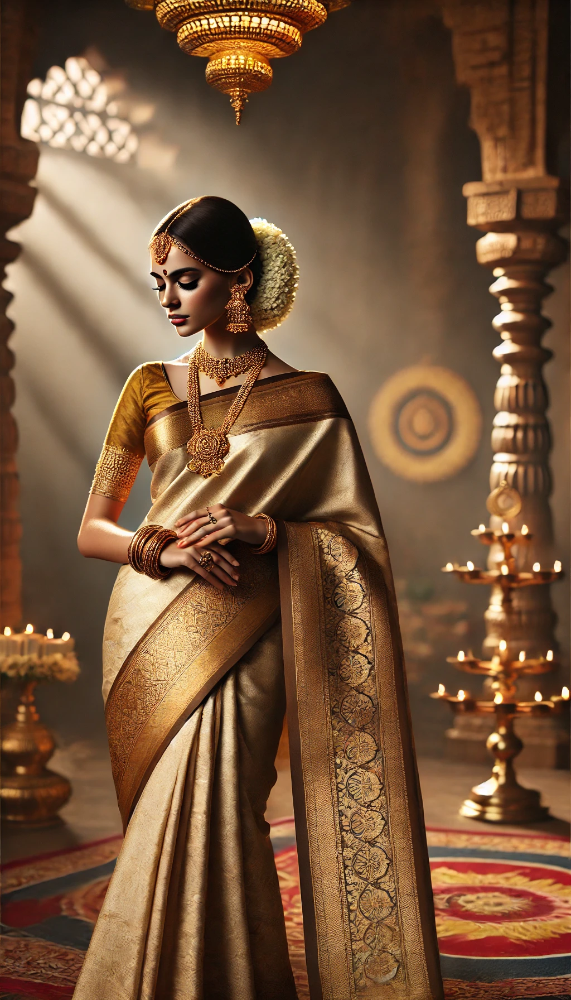
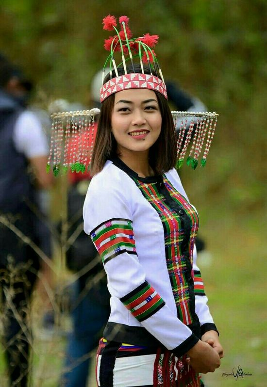
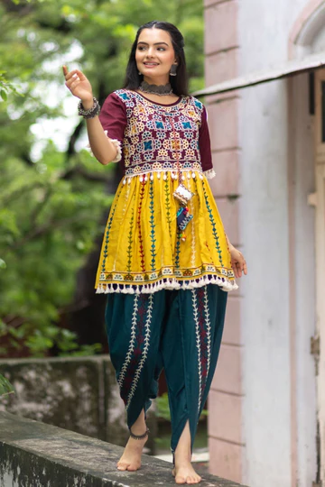
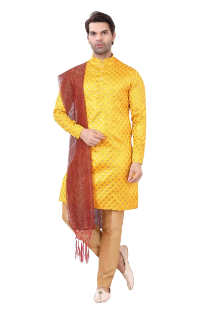
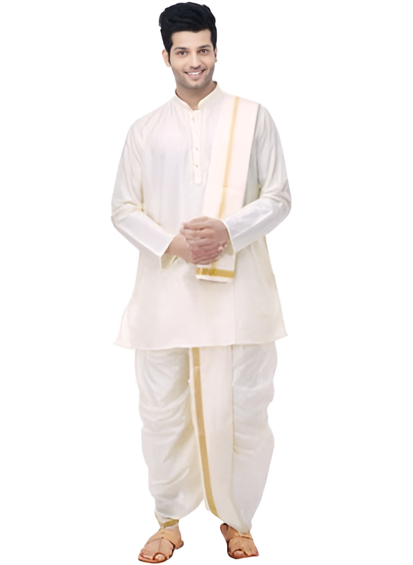
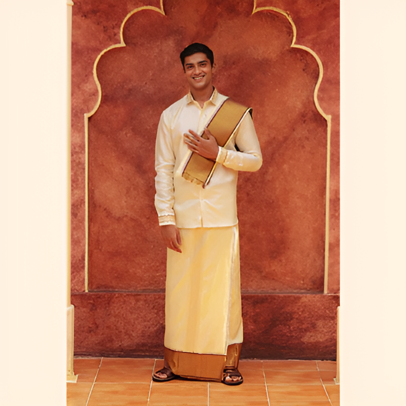
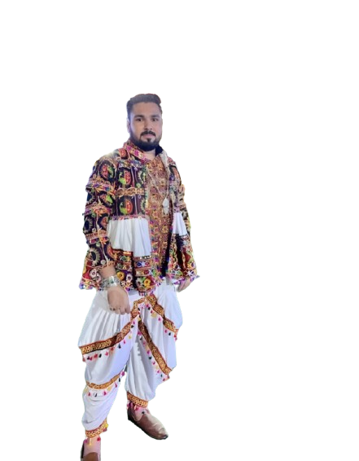

Culture of Clothing
India is one of the most diverse lands found anywhere else in the world. From language to dressing-style, the country has been hailed as one of the most complex amalgamation of various cultural identities.
Clothing in India varies with the different ethnicities, geography, climate, and cultural traditions of the people of each region of India. Historically, clothing has evolved from simple garments like kaupina, langota, achkan, lungi, sari, to perform rituals and dances. In urban areas, western clothing is common and uniformly worn by people of all social levels. India also has a great diversity[1] in terms of weaves, fibers, colors, and the material of clothing. Sometimes, color codes are followed in clothing based on the religion and ritual concerned. The clothing in India also encompasses a wide variety of Indian embroidery, prints, handwork, embellishments, and styles of wearing clothes. A wide mix of Indian traditional clothing and western styles can be seen in India.
Link to each section:
Classification of Women clothing in India by region and style:
| Region | Traditional Style | Modern Style | Indo- Western Style | Image of tradional cloth |
|---|---|---|---|---|
| North India | Saree, Salwar Kameez, Lehenga Choli, Phulkari Dupatta | Jeans, Tops, Dresses, Skirts, Business Suits | Kurti with Leggings, Palazzo with Tunic, Saree with Crop Top |  Salwar Kameez |
| South India | Saree (Kanjeevaram, Kasavu), Pavadai Davani (Langa Voni) | Jeans, Blouses, Western Dresses | Kurti with Jeggings, Indo-Western Gowns |  Traditional Saree |
| East India | Mekhela Sador (Assam), Tant & Baluchari Sarees (Bengal) | T-Shirts, Trousers, Formal Shirts | Sarees with Modern Blouses, Indo-Western Kurtas |  Traditional cloths from east-INDIA |
| West India | Ghagra Choli (Rajasthan & Gujarat), Bandhani Saree | Jumpsuits, Denim Wear, Midi Dresses | Kaftan Kurtis, Dhoti Pants with Tops |  Traditional cloths of west-INDIA |
Classification of men wearables in India by region and style:
| Region | Traditional Style | Modern Style | Indo- Western Style | Image of tradional cloth |
|---|---|---|---|---|
| North India | Kurta Pajama, Sherwani, Pathani Suit | Shirts, Trousers, Hoodies, Blazers | Nehru Jacket with Jeans, Indo-Western Sherwani |  Kurta Pajama |
| South India | Dhoti, Lungi, Mundu, Angavastram | T-Shirts, Cargo Pants, Sneakers | Kurta with Denim, Lungi with T-Shirts |  Lungi and Kurta |
| East India | Dhoti-Kurta (Bengal, Odisha), Gamcha | Track Pants, Jackets, Polo Shirts | Printed Jackets with Kurtas |  Dhoti and Gamcha |
| West India | Kediyu & Dhoti (Gujarat), Bandhgala Suits | Casual Wear (Jeans, T-Shirts, Sneakers) | Indo-Western Blazers, Jodhpuri Suits |  Kediyu |
Link to other Pages: